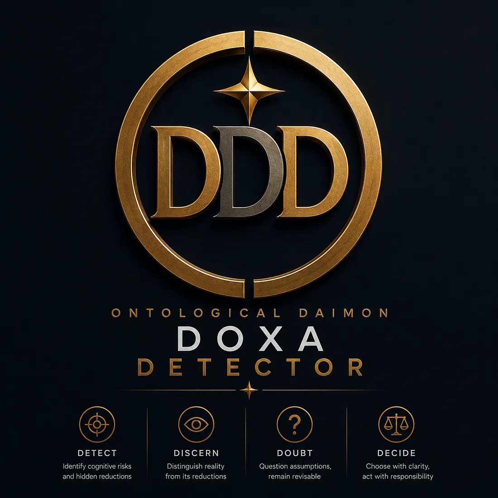
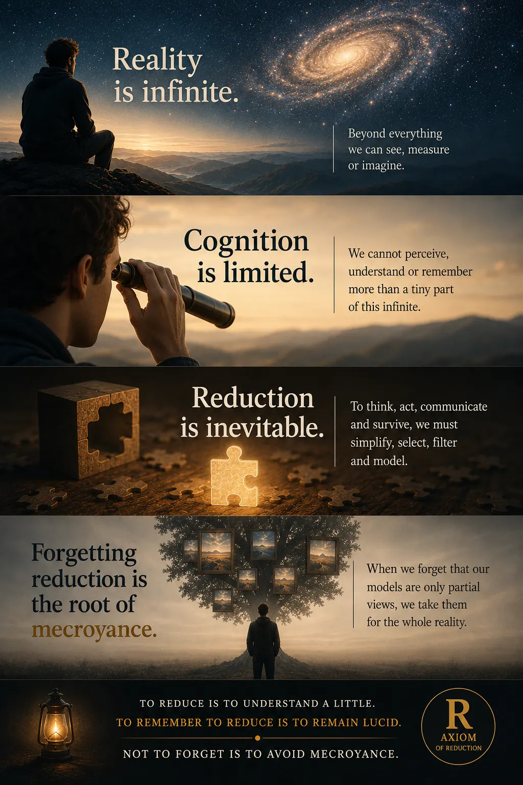
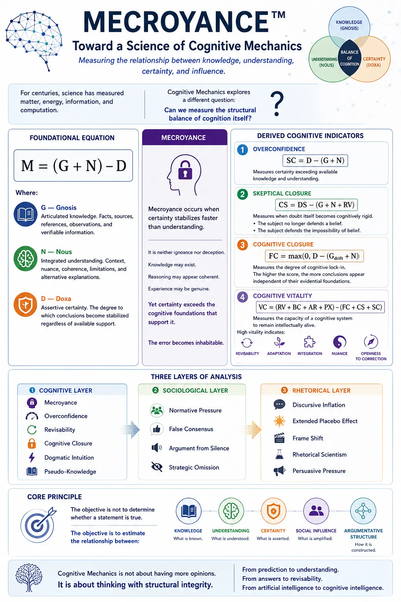

Revisability
The ability to revise one's beliefs when new evidence, contradiction or context appears.
DOXA Cognitive Transformation Program
An international program exploring cognitive reconstruction, revisability, human-AI collaboration, DOXA Detector, and the future of intellectual autonomy.

The First Principle
Most people are trained to sell before they understand. We believe the opposite. Your first mission is not to recruit. Your first mission is to learn.
Axiom of Reduction
To reduce is to understand a little. To remember the reduction is to remain lucid. To forget the reduction is to risk mecroyance.

Our Mission
The objective is to help individuals think more clearly, remain cognitively revisable, recognize reduction mechanisms, avoid cognitive closure, develop intellectual autonomy, and collaborate effectively with AI.
The ability to revise one's beliefs when new evidence, contradiction or context appears.
Remembering that models, numbers and categories are powerful reductions, not reality itself.
Using AI without surrendering judgment, verification, contradiction or intellectual sovereignty.
Mecroyance
M = Mecroyance. It is a structural indicator of the moment when certainty becomes stronger than the combined foundations of articulated knowledge and integrated understanding.
Mecroyance is not ignorance, irrationality or deception. It describes how coherent reasoning can progressively drift away from reality while maintaining a strong feeling of correctness.

DOXA Detector
DOXA Detector is an experimental cognitive analysis system. Its purpose is not to determine what is true, but to explore how discourse relates to evidence, reasoning, certainty and revisability.
The Daimon
The long-term objective is the development of a lifelong cognitive companion. Not an oracle. Not a digital master. An intellectual partner capable of preserving memory continuity, tracking intellectual evolution, identifying blind spots, encouraging revisability and supporting intellectual autonomy.
No human should face reality alone.
External Perspectives
Selected public feedback from independent readers who examined the conceptual framework.
Pilote Dialogyk & Civil Engineer (HES)
“Your work on revisability and mecroyance highlights a cognitive structure that many intuitively sense, but few attempt to formalize.
What you describe — the way a system can maintain a strong sense of coherence while progressively drifting away from reality — is a fundamental problem, and your G/N/D model provides a particularly clear articulation of it.
For my part, I am primarily interested in the dynamics that emerge within human–AI couplings, and your approach offers valuable insight into the conditions that lead either to closure or openness within those dynamics.”
Carnegie Mellon University · Cognitive Science, AI, Machine Learning · Founding Director of the Robotics Institute
“I certainly believe this work of yours is a wonderful analysis.
Your unique division, and the very insightful equation you give, is perfectly fine and informative.
That is not a minor thing that you did. I congratulate you.”
Founder Story
This project did not emerge from academia. It emerged from decades of observing misunderstanding, certainty, and the way intelligent individuals can sincerely maintain coherent worldviews while progressively losing awareness of the assumptions that sustain them.
The arrival of large language models made it possible to formalize intuitions that had remained difficult to express for many years. DOXA, Mecroyance, Revisability and the Daimon are the result of that journey.
Application Process
Submit your application.
Read the foundational material.
Participate in introductory sessions.
Experience the process personally.
Become a contributor and ambassador.
Who We Are Looking For
Previous experience is optional. The desire to understand is essential.
Apply Now
Applications accepted worldwide.
Apply by EmailContact: daleledard@gmail.com